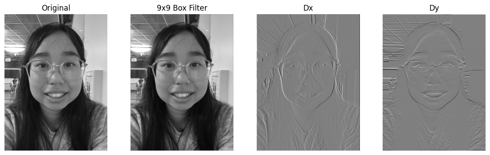
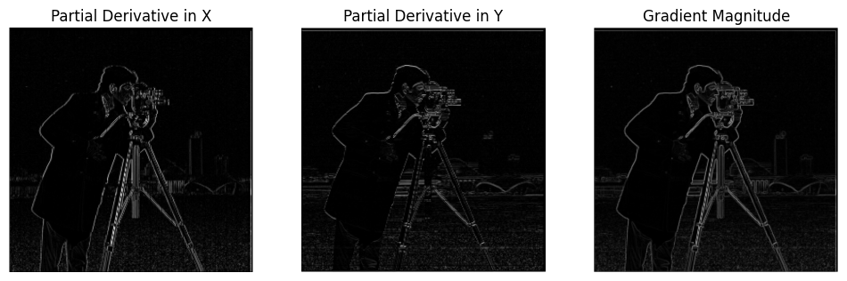
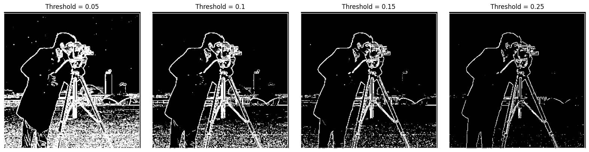
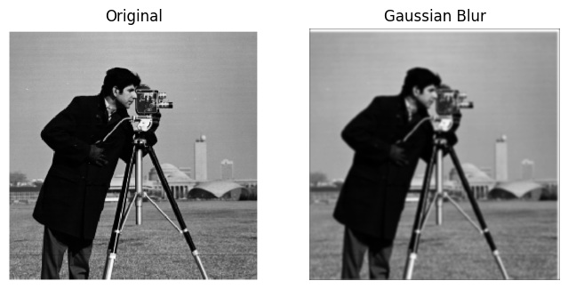
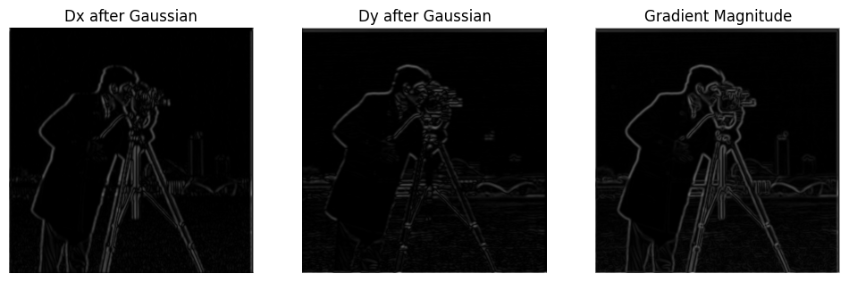
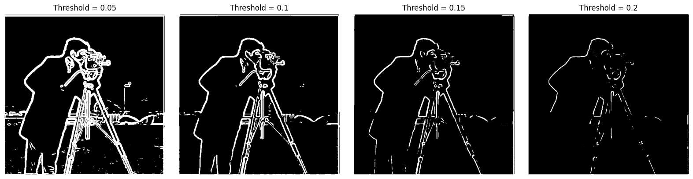
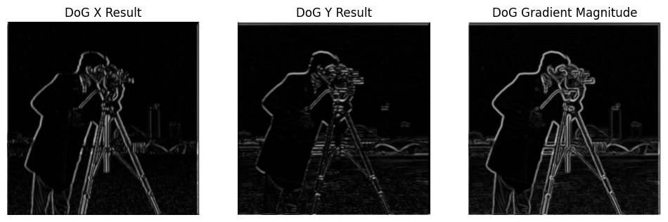
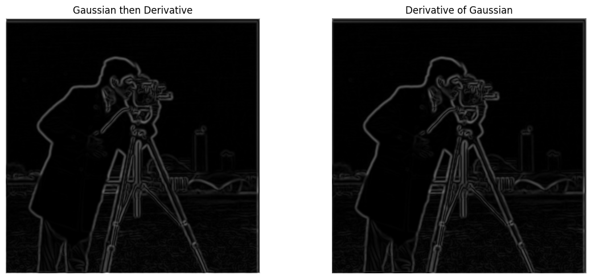
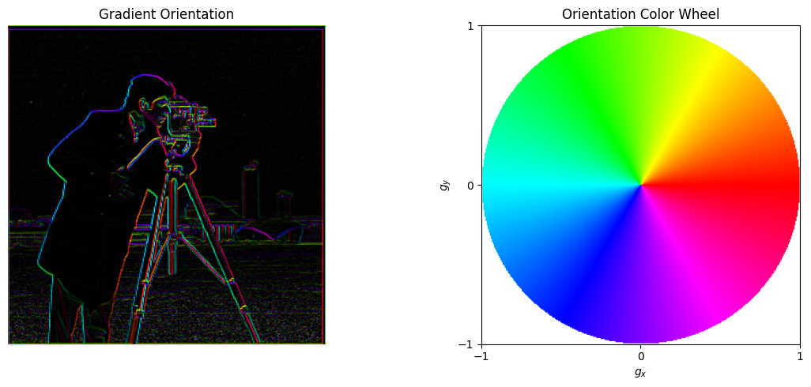

Part 1 only. This report follows the notebook implementation, saved figures, and measured runtime from the local main.ipynb.
Part 1: Fun with Filters
This part starts from a hand-written NumPy convolution, then uses finite differences to measure image gradients, and finally adds Gaussian smoothing and a derivative-of-Gaussian construction to reduce noise. The saved figures in data/p1_1_convolution_results.png through data/p1_bw_orientation.png match the notebook outputs used below.
1.1 Convolutions from Scratch
Convolution slides a small kernel across the image. At each output location, the local patch is multiplied elementwise by the flipped kernel and summed. I implemented this in two ways: one version uses four explicit loops over image and kernel indices, and the other keeps only the outer two loops while NumPy handles the patch multiplication and reduction. In both cases, I use zero padding so the output stays the same size as the input. The box filter acts like local averaging, so it blurs the image, while the finite-difference filters respond to changes along x and y.
Four nested loops
def convolve_four_loops(image, kernel):
kernel = np.flip(kernel, axis=(0, 1))
pad_h = kernel.shape[0] // 2
pad_w = kernel.shape[1] // 2
padded_image = np.pad(image, ((pad_h, pad_h), (pad_w, pad_w)), mode="constant")
output = np.zeros_like(image, dtype=float)
for i in range(image.shape[0]):
for j in range(image.shape[1]):
for m in range(kernel.shape[0]):
for n in range(kernel.shape[1]):
output[i, j] += padded_image[i + m, j + n] * kernel[m, n]
return output
Two explicit loops
def convolve_two_loops(image, kernel):
kernel = np.flip(kernel, axis=(0, 1))
pad_h = kernel.shape[0] // 2
pad_w = kernel.shape[1] // 2
padded_image = np.pad(image, ((pad_h, pad_h), (pad_w, pad_w)), mode="constant")
output = np.zeros_like(image, dtype=float)
for i in range(image.shape[0]):
for j in range(image.shape[1]):
region = padded_image[i:i + kernel.shape[0], j:j + kernel.shape[1]]
output[i, j] = np.sum(region * kernel)
return output
Implementation
Runtime
Four nested loops
115.3169 s
Two nested loops
11.3973 s
scipy.signal.convolve2d
0.4912 s
The four-loop version is slow because almost all of the work happens in Python. The two-loop version is much faster because NumPy performs the patch-wise multiply-and-sum inside compiled code. SciPy is still far faster because it uses an optimized convolution implementation. For the derivative display, I only changed the visualization limits with the 99th percentile of the absolute derivative values; the actual derivative computation stayed the same.

Original grayscale photo, 9x9 box filter output, and the Dx/Dy responses from the same custom convolution code.
1.2 Finite Difference Operator
An image can be treated as an intensity function I(x, y). Edges appear where intensity changes quickly, so I estimate the partial derivatives with finite differences. The horizontal derivative Ix = I * Dx responds strongly to vertical edges, while the vertical derivative Iy = I * Dy responds strongly to horizontal edges. I then combine them into the gradient magnitude |∇I| = sqrt(Ix2 + Iy2), which gives a single edge-strength score that does not depend on orientation.

The finite differences pick out the main edge structures in the cameraman image. Dx highlights vertical boundaries, Dy highlights horizontal ones, and the gradient magnitude combines both.

I tested thresholds 0.05, 0.10, 0.15, and 0.25. Lower thresholds keep more weak edges but also more texture and noise, while higher thresholds suppress noise but remove some weaker real edges.
1.3 Derivative of Gaussian (DoG) Filter
A. Gaussian smoothing followed by derivative
Finite differences react not only to true edges but also to small high-frequency fluctuations. To reduce that effect, I first smooth the image with a 9x9 Gaussian kernel with sigma = 2, then take the same Dx and Dy derivatives. This gives cleaner responses because the blur removes a lot of the fine noise before differentiation. In symbols, Iblur = I * G, then Ix = (I * G) * Dx and Iy = (I * G) * Dy, so the final magnitude is |∇Iblur| = sqrt(Ix2 + Iy2).
I also compared thresholds 0.05, 0.10, 0.15, and 0.20 on the smoothed gradient magnitude. The comparison is mainly about the tradeoff between keeping weak edges and suppressing residual noise; I did not choose a single final threshold in the notebook.

The Gaussian blur removes small local fluctuations before any derivative is taken.

After smoothing, the derivative images are less noisy and the main structures stand out more clearly.

The threshold sweep shows the same low-threshold versus high-threshold tradeoff, but on cleaner gradient responses.
B. Derivative of Gaussian filter
Here DoG means Derivative of Gaussian, not Difference of Gaussians. Because convolution is associative, (I * G) * Dx = I * (G * Dx) and the same holds for Dy. That means I can build the derivative-of-Gaussian filters first and apply them directly to the image instead of smoothing and differentiating in two separate steps.
The DoG X and DoG Y filters are the Gaussian-smoothed versions of the finite difference operators.

Applying the DoG filters directly to the image gives edge responses that are very close to the blur-then-derivative pipeline.

The two approaches produce very similar edge structures, as expected from convolution associativity. Small differences near the borders can still appear because the sequential version applies padding and cropping at an intermediate stage.
Bells & Whistles: Gradient Orientation
Gradient magnitude tells me how strong an edge is, but not which direction it points. For orientation, I work with the gradient vector (gx, gy) and avoid built-in angle functions. The implementation uses the tangent half-angle identity, a Taylor-series approximation of arctangent, and quadrant correction from the signs of gx and gy. Zero-gradient pixels are assigned orientation 0 because they do not have a meaningful direction.
Taylor approximation
def atan_taylor(x, n_terms=50):
result = np.zeros_like(x, dtype=float)
for n in range(n_terms):
result += ((-1) ** n) * x ** (2 * n + 1) / (2 * n + 1)
return result
For visualization, I map hue to orientation, saturation to 1, and value to gradient magnitude. The magnitude is scaled with the 99th percentile before clipping into [0, 1], so strong edges stay bright without a few extreme values dominating the display. The color wheel explains the angle-to-color mapping. One important geometric point is that gradient orientation is perpendicular to the visible edge; the gradient points toward the direction of fastest intensity increase.

The orientation image uses cyclic color to encode direction, and the wheel shows how colors correspond to gradient directions.
{kind=link}
{kind=link}